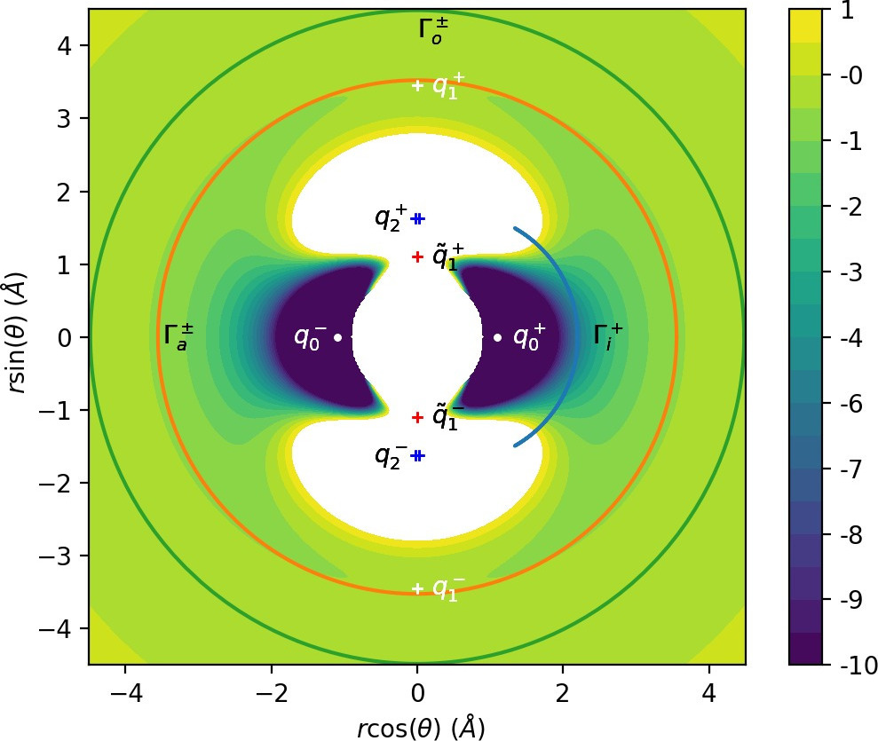
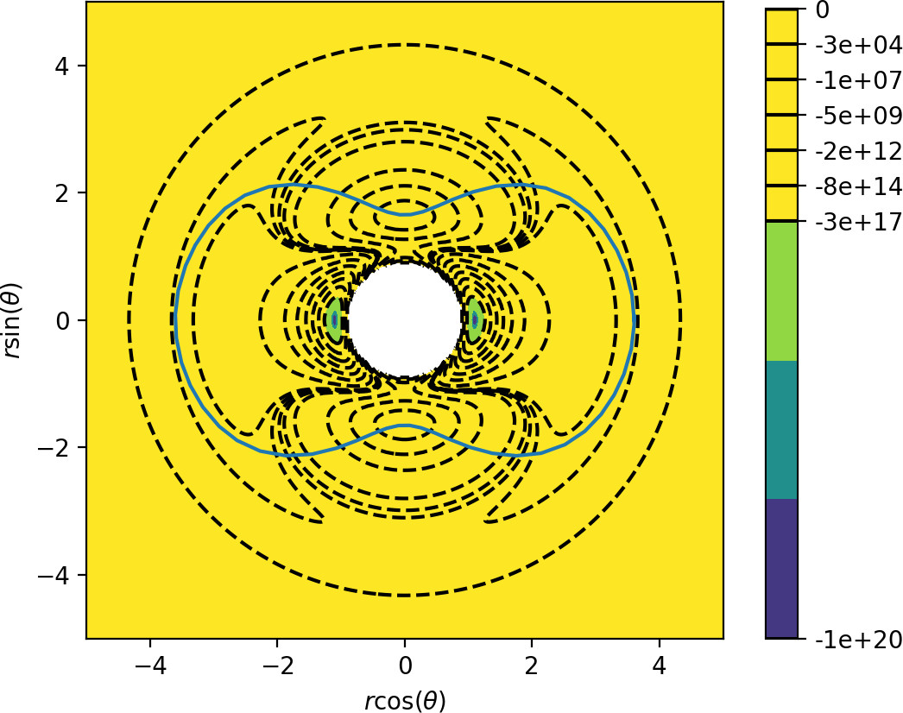
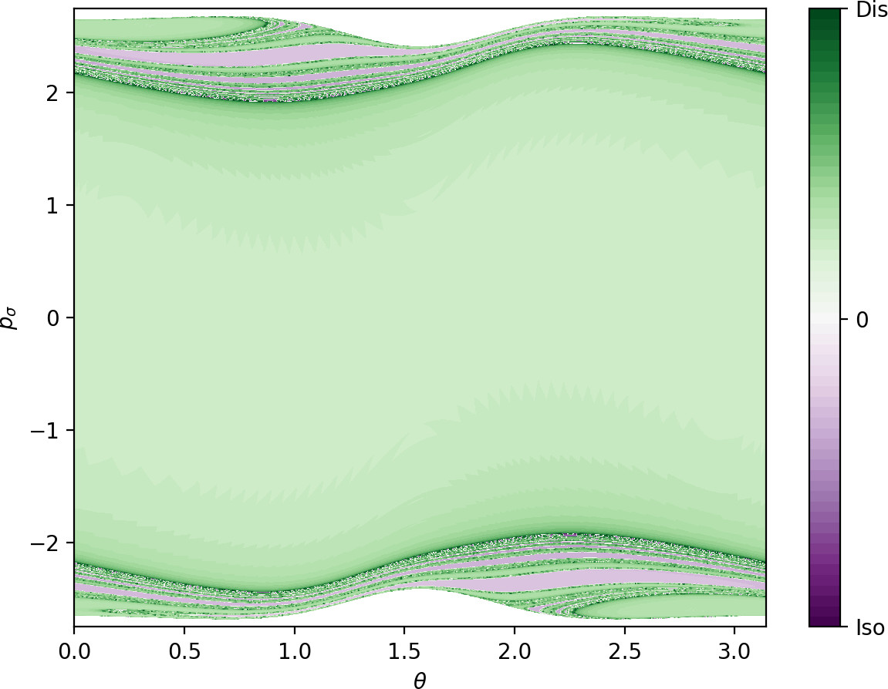
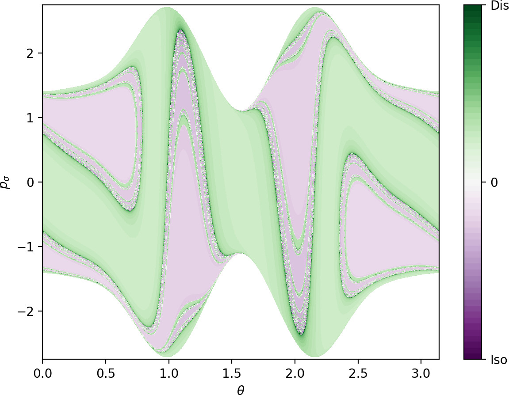
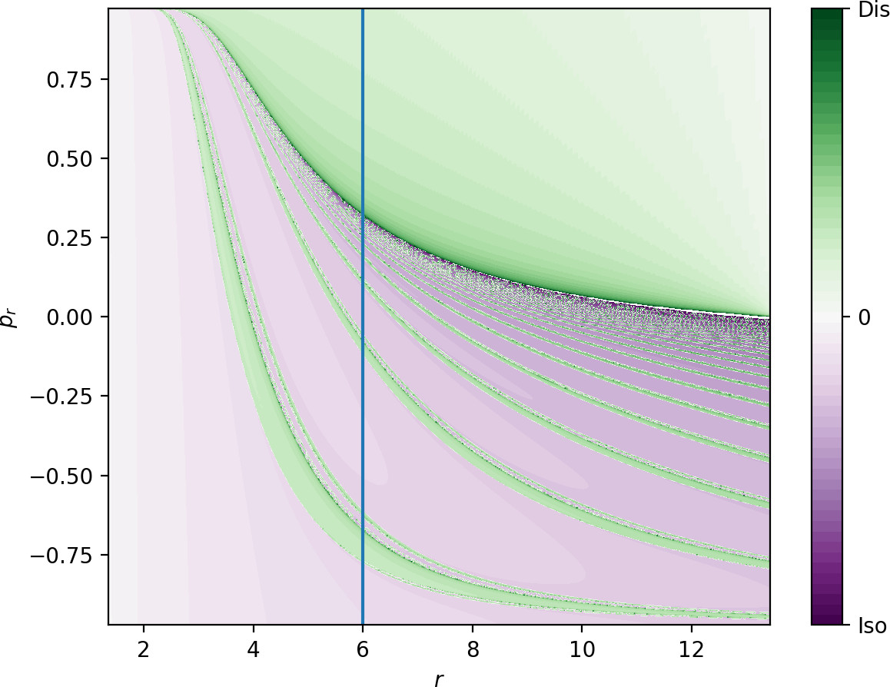
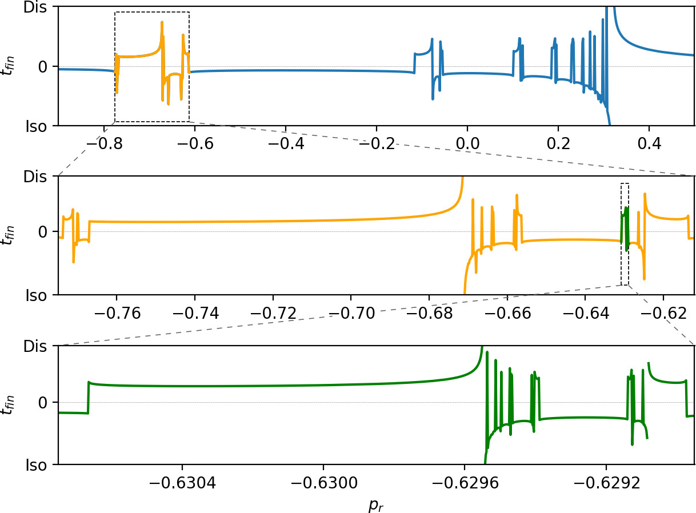
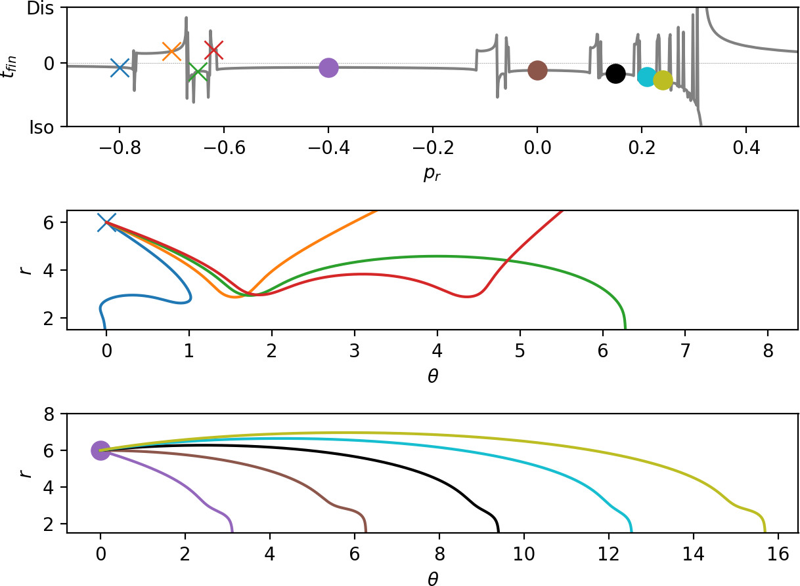

Two Degree-of-Freedom Chesnavich Model with Isokinetic thermostat
Introduction {#sec:intro}
The roaming mechanism for chemical reactions was introduced in reference to the description of the photodissociation of formaldehyde [@zee:1664; @townsend2004roaming; @bowman]. After excitation of the formaldehyde molecule by a laser pulse, a single CH bond begins to stretch. Rather than proceed directly to dissociation, the hydrogen atom rotates around the molecular fragment in a region of the potential energy surface where it is subject to weak forces. The corresponding motion of the hydrogen atom was termed 'roaming'. At a later stage the roaming hydrogen atom encounters the bound hydrogen atom and undergoes an abstraction reaction. The resulting H$_2$ molecule then separates from the CO fragment. This reaction is then said to occur by the roaming mechanism.
Since the pioneering formaldehyde studies a similar roaming mechanism has been observed to occur in a number of chemical reactions. Many of these reactions are described in several review articles[@suits2008; @bowman2011roaming; @Bowman2011Suits; @BowmanRoaming; @mauguiere2017roaming].
Essentially all of these roaming reactions have been studied at constant total energy. The goal of this chapter is to study analogous roaming reaction mechanisms at constant kinetic energy. Specifically, we study Chesnavich's model for an ion-molecule reaction subjected to a Hamiltonian isokinetic thermostat.
Chesnavich's empirical model for the ion-molecule reaction CH$_4^+$ $\rightleftharpoons$ CH$_3^+$ $+$ H was introduced in reference . A detailed derivation of this model can be found in reference . Chesnavich's model captures many of the essential aspects of the roaming mechanism. It describes the situation where a hydrogen atom separates from the rigid CH$_3^+$ core and, instead of dissociating, roams in a region of nearly constant potential only to return to the core. While Chesnavich's model does not accurately describe the intramolecular abstraction and subsequent dissociation, it has nevertheless provided significant insight into the roaming process, see, for example, refernces .
In the present work we apply a Hamiltonian version of the isokinetic thermostat to Chesnavich's model. This thermostat is not as widely used as the Nosé-Hoover thermostat, and its many variants, but the non-Hamiltonian version of the isokinetic thermostat has been developed and applied to a variety of problems of interest in chemistry by Minary et al. [@Minary03a; @Minary03b]. In this thermostat, the particle momenta are subject to a nonholonomic constraint that keeps the kinetic energy constant. The resulting dynamics (if ergodic) generates a canonical distribution in configuration space, where the associated temperature is related to the value of the conserved kinetic energy [@Morriss98]. A Hamiltonian version of the isokinetic thermostat was given by Dettmann [@Dettmann96; @Morriss98] (see also [@Litniewski93; @Morishita03]).
The Hamiltonian isokinetic thermostat dynamics explored in our chapter is relatively unfamiliar, although, as noted, there has been some relevant earlier work in the chemical literature [@Minary03a; @Minary03b]. The basic theory [@Dettmann96; @Morriss98] shows that Hamiltonian dynamics in terms of a set of variables related to the physical variables by a noncanonical tranformation, together with the use of the exponentiated potential results in a canonical distribution in the physical configuration variables (assuming, as usual, ergodic dynamics). The unfamiliar aspect of the dynamics lies in the imposition of a nonholonomic constraint on the original variables; namely, constant kinetic energy. Again, the general theory shows that the effective temperature is proprtional to the value of the conserved kinetic energy.
It is in this sense that the nonholonomic dynamics explored here for the Chesnavich model is effectively at constant temperature. We do not claim that this dynamics is the same as obtained using a Boltzmann distribution for the physical momenta; nevertheless, one point of this chapter is that the phase space structure of the nonholonomic system can in this case be analyzed using methods employed for the microcanonical case, and an analogous roaming mechanism explored.
For our purposes the Hamiltonian formulation of the isokinetic thermostat then has several advantages. There has been considerable development in our understanding of phase space structures governing chemical reaction dynamics in recent years, see, for example, references. This phase space structure approach has been applied to the Hamiltonian isokinetic thermostat formalism [@ezra2008impenetrable; @collins2010phase]. In this chapter we continue these developments in our study of the Hamiltonian phase space structure associated with the roaming mechanism as exhibited in Chesnavich's model subjected to a Hamiltonian isokinetic thermostat.
Development of the Problem {#sec: HIK}
Thermostatted Hamiltonian
We consider a Hamiltonian system
\begin{equation} H(q,p) = T(q,p) + \Phi(q), \label{eq:Ham} \end{equation}where the position-dependent kinetic energy $T(q,p)$ is a quadratic form of the momenta and $\Phi(q)$ is a potential energy. The aim of the isokinetic thermostat is to constrain $T$ to a constant value $T_0^2>0$.
We define the isokinetic Hamiltonian $\mathcal{K}$ by
$$\mathcal{K}(q,\pi) = e^{\Phi}T(q,\pi) - e^{-\Phi}T_0^2.$$Via the non-canonical transformation,
\begin{equation} \pi=e^{-\Phi}p \label{eq:transf} \end{equation}the level set $\mathcal{K}=0$ corresponds to constant kinetic energy $T=T_0^2$ in the system [eq:Ham]{reference-type="eqref" reference="eq:Ham"}. Note that since $T$ is a quadratic form of the momenta, from [eq:transf]{reference-type="eqref" reference="eq:transf"} we have
$$T(q,\pi)=T(q,e^{-\Phi}p)=e^{-2\Phi}T(q,p),$$and hence
$$e^{\Phi}T(q,\pi) - e^{-\Phi}T_0^2=e^{-\Phi}\left(T(q,p) - T_0^2\right).$$Due to the Hamiltonian structure of the system, $\dot{\mathcal{K}}=0$ along the solutions of Hamilton's equations
\begin{equation} \begin{split} \dot{q}&=\frac{\partial \mathcal{K}}{\partial \pi}=e^{\Phi}\frac{\partial T(q,\pi)}{\partial \pi},\\ \dot{\pi}&=-\frac{\partial \mathcal{K}}{\partial q}= -e^{\Phi}\frac{\partial \Phi}{\partial q}T(q,\pi) -e^{\Phi}\frac{\partial T(q,\pi)}{\partial q} -e^{-\Phi}\frac{\partial \Phi}{\partial q}T_0^2. \end{split} \label{eq:eqKham} \end{equation}Time scaling {#sec:scaling}
In this section, we show that the dynamics defined by equations [eq:eqKham]{reference-type="eqref" reference="eq:eqKham"} produce equivalent dynamics regardless of the value of $T_0^2$. We prove that a suitable scaling of time and momenta transforms [eq:eqKham]{reference-type="eqref" reference="eq:eqKham"} into equations with $T_0=1$.
Consider the scaling of time and momenta by
\begin{equation} s=T_0t, \quad \Pi=\frac{\pi}{T_0}. \label{eq:tpscale} \end{equation}From [eq:tpscale]{reference-type="eqref" reference="eq:tpscale"} and
\begin{equation} ds=T_0dt, \label{eq:timescale} \end{equation}it follows that
\begin{equation} \begin{split} \frac{dq}{ds}&=\frac{dt}{ds}\frac{dq}{dt}=\frac{1}{T_0}\dot{q},\\ \frac{d\Pi}{ds}&=\frac{dt}{ds}\frac{d\Pi}{d\pi}\frac{d\pi}{dt}=\frac{1}{T^2_0}\dot{\pi}. \end{split} \label{eq:derivs} \end{equation}Using [eq:eqKham]{reference-type="eqref" reference="eq:eqKham"}, [eq:derivs]{reference-type="eqref" reference="eq:derivs"} and
\begin{equation} T(q,\Pi)=\frac{1}{T^2_0}T(q,\pi), \label{eq:Pitopi} \end{equation}we can write the equations of motion in $s$ and $\Pi$ as
\begin{align*} \frac{dq}{ds}&=\frac{1}{T_0}e^{\Phi}\frac{\partial T(q,\pi)}{\partial \pi}={T_0}e^{\Phi}\frac{\partial T(q,\Pi)}{\partial \pi}=e^{\Phi}\frac{\partial T(q,\Pi)}{\partial \Pi},\\ \frac{d\Pi}{ds}&=-e^{\Phi}\frac{\partial \Phi}{\partial q}\frac{1}{T^2_0}T(q,\pi) -e^{\Phi}\frac{1}{T^2_0}\frac{\partial T(q,\pi)}{\partial q} -e^{-\Phi}\frac{\partial \Phi}{\partial q}\frac{1}{T^2_0}T_0^2,\\ &= -e^{\Phi}\frac{\partial \Phi}{\partial q}T(q,\Pi) -e^{\Phi}\frac{\partial T(q,\Pi)}{\partial q} -e^{-\Phi}\frac{\partial \Phi}{\partial q}. \end{align*}These equations correspond to the isokinetic Hamiltonian with $T_0=1$
$$\mathcal{K}_1(q,\Pi) = e^{\Phi}T(q,\Pi) - e^{-\Phi},$$which is related to $\mathcal{K}$ via
$$\mathcal{K}_1(q,\Pi) = \frac{1}{T^2_0}\mathcal{K}(q,\pi).$$Clearly the dynamics of $\mathcal{K}$ and $\mathcal{K}_1$ is equivalent and only differs by scaling by a constant factor.
Chesnavich's Model and Roaming {#sec:CMR}
In this section we introduce Chesnavich's model for the ion-molecule reaction CH$_4^+$ $\rightleftharpoons$ CH$_3^+$ $+$ H and recall known results about roaming in this system. The model was introduced by Chesnavich [@Chesnavich1986] to investigate the transition from vibration/librational motion of the H-atom in a deep potential well representing CH$_4^+$ to nearly-free rotation in a flat and rotationally symmetric region representing the dissociated CH$_3^++$H.
Chesnavich's Model Hamiltonian {#sec:CMH}
Chesnavich's CH$_4^+$ model is a Hamiltonian system with 2 degrees of freedom, consisting of a rigid CH$_3^+$ molecule and a mobile H atom. The system is defined by the Hamiltonian
\begin{equation} H(r,\theta,p_r, p_\theta) = \frac{1}{2} \frac{p_r^2}{\mu} + \frac{1}{2}p_\theta^2 \left(\frac{1}{\mu r^2}+\frac{1}{I_{CH_3}}\right) + U(r,\theta), \label{eq:chesHam} \end{equation}where $(r, \theta, \phi)$ are polar coordinates describing the position of the H-atom in a body-fixed frame attached to the CH$_3^+$ core (coordinate $\phi$ is ignorable in this model). The reduced mass of the system $\mu=\frac{m_{CH_3}m_{H}}{m_{CH_3}+m_{H}}$, where $m_{H}=1.007825$ u and $m_{CH_3}=3m_{H}+12.0$ u, and the moment of inertia of the rigid body CH$_3^+$ $I_{CH_3}=2.373409$ uÅ$^2$.
The potential $U(r,\theta)$ consists of a radial long range potential $U_{CH}$ and a short range potential $U_{coup}$ that models the short range anisotropy of the rigid CH$_3^+$ body.
\begin{equation} \label{eq:U} U(r,\theta ) = U_{CH} (r) + U_{coup} (r,\theta). \end{equation}It is characterised by two deep wells corresponding to bound CH$_4^+$, two areas of high potential and a flat area beyond them as shown in Fig. [fig:pot]{reference-type="ref" reference="fig:pot"}.
![Contour plot of Chesnavich's potential energy surface $U$ for $a=1$.
Dashed lines correspond to $U<0$, solid lines correspond to $U\geq0$.
Contours correspond to values of potential shown on the colorbar right,
with some values indicated in the plot.
[]{label="fig:pot"}](figures/figure1.jpg) {#fig:pot width="50%"}
{#fig:pot width="50%"}
The long range potential is
\begin{equation} \label{eq:UCH} U_{CH} (r) = \frac{D_e}{c_1 - 6} \left( 2 (3-c_2) e^{c_1 (1-x)} - \left( 4 c_2 - c_1 c_2 + c_1 \right) x^{-6} - (c_1 - 6) c_2 x^{-4} \right), \end{equation}with parameter values as used in the original work [@Chesnavich1986]:$x = \frac{r}{r_e}$, dissociation energy $D_e=47$ kcal/mol, equilibrium bond length $r_e=1.1$ Å, $c_1=7.37$ and $c_2=1.61$. The short range hindered rotor potential $U_{coup}$ is defined by
\begin{equation} \label{eq:Ucoup} U_{coup} (r,\theta) = \frac{U_e e^{-a(r-r_e)^2}}{2} (1 - \cos 2 \theta ), \end{equation}where $U_e=55$ kcal/mol is the equilibrium barrier height. The distance at which transition occurs from rotation to vibration is determined by the parameter $a$ (in Å$^{-2}$). Various values of $a$ have been considered in previous works, namely $a=1$ [@Chesnavich1986; @mauguiere2014roaming; @mauguiere2014multiple; @krajnak2018phase], $a=4$ [@Chesnavich1986; @mauguiere2014roaming] and a range of values $0.7\leq a\leq 8$. [@krajnak2018influence]
The CH$_3^+$ is a symmetric top in Chesnavich's model. Although the range of coordinate $\theta$ is $0 \leq \theta \leq \pi$, in the planar (zero overall angular momentum) version of the model the range of $\theta$ is extended to $0 \leq \theta \leq 2 \pi$, and the potential has four-fold symmetry
\begin{equation} U(r,\theta)=U(r,-\theta)=U(r,\pi-\theta)=U(r,\pi+\theta). \label{eq:sym} \end{equation}The potential admits four pairs of equilibrium points pairwise related by symmetry [eq:sym]{reference-type="eqref" reference="eq:sym"}, as listed in Tab. [table:equil]{reference-type="ref" reference="table:equil"} and shown in Fig. [fig:pot]{reference-type="ref" reference="fig:pot"}.
| Energy (kcal mol$^{-1}$) | $r$ (Å) | $\theta$ (radians) | Significance | Label |
|---|---|---|---|---|
| $-47$ | $1.1$ | $0$ | potential well | $q_0^+$ |
| $-0.63$ | $3.45$ | $\pi/2$ | isomerisation saddle | $q_1^+$ |
| $22.27$ | $1.63$ | $\pi/2$ | local maximum | $q_2^+$ |
| $8$ | $1.1$ | $\pi/2$ | isomerisation saddle | $\widetilde{q}_1^+$ |
: Equilibrium points of the potential $U(r, \theta)$.[]{label="table:equil"}
Revealing Phase Space Structures
Roaming in Chesnavich's Model {#sec:roamingChes}
As mentioned in Section [sec:intro]{reference-type="ref" reference="sec:intro"}, we are interested in the roaming mechanism wherein the hydrogen atom separates from the CH$_3^+$ core only to return to the vicinity of the core before dissociating. Here we review the dynamical definition of roaming as introduced in [@mauguiere2014roaming], which is based on periodic orbits as invariant structures having dynamical relevance.
In the relevant energy interval $0\leq E\leq 5$, there are three important families of periodic orbits [@mauguiere2014multiple]. At any given fixed energy $0\leq E\leq 5$, there are three pairs of important periodic orbits present in this system, pairwise related by symmetry [eq:sym]{reference-type="eqref" reference="eq:sym"}, as shown in Fig. [fig:orbitse5]{reference-type="ref" reference="fig:orbitse5"}. Therefore we refer to a continuum of periodic orbits parametrised by energy as a family of periodic orbits. We will refer to these families as the inner ($\Gamma^i$), middle ($\Gamma^a$) and outer ($\Gamma^o$) periodic orbits. It is important to note that none of the orbits is directly related to a saddle point of the system.
{#fig:orbitse5 width="60%"}
Their significance is as follows:
$\Gamma^i$: Delimits the potential wells that correspond to CH$_4^+$ isomers. The orbits oscillate around the axes $\theta=0$ and $\theta=\pi$.
$\Gamma^a$: Two rotational orbits with opposite orientation - one clockwise, one counter-clockwise that are crucial for defining roaming.
$\Gamma^o$: Centrifugal barrier delimiting the region of dissociated states. Two rotational orbits with opposite orientation - one clockwise, one counter-clockwise.
Roaming was shown [@krajnak2018phase] to disappear for $E\geq 2.5$. In the energy interval $0< E< 2.5$, all of the above-mentioned periodic orbits are unstable. Define the dividing surfaces using DS$^i$, DS$^a$ and DS$^o$ as the set of all phase space points $(r,\theta,p_r, p_\theta)$ that satisfy $$H(r,\theta,p_r, p_\theta)=E,$$
and their configuration space projections $(r,\theta)$ coincide with the configuration space projections of $\Gamma^i$, $\Gamma^a$ and $\Gamma^o$ respectively. Due to the instability of the orbits, the resulting dividing surfaces do not admit local recrossing.
A roaming trajectory is then defined as a trajectory that crosses DS$^a$ an odd number of times between leaving the potential well and dissociating. Trajectories that return to their region of origin cross DS$^a$ an even number of times - isomerising trajectories returning to either of the potential wells, nonreactive trajectories return to dissociated states.
As explained in reference , the oscillatory nature of $\Gamma^i$ implies that DS$^i$ consists of two spheres, while the rotational nature of $\Gamma^a$ and $\Gamma^o$ means that DS$^a$ and DS$^o$ are tori[@mauguiere2016ozone]. Each sphere can be divided using the corresponding periodic orbit into two hemispheres and each torus can be divided using both corresponding periodic orbits into two annuli[@mauguiere2016ozone]. All hemispheres and annuli are surfaces of unidirectional flux, for example all trajectories leaving the potential well cross the same (outward) hemisphere of DS$^i$, while all trajctories entering the potential well cross the other (inward) hemisphere of DS$^i$.
Roaming can hereby be reformulated as a transport problem in phase space. Every trajectory leaving the well must cross the outward hemisphere of DS$^i$ and every trajectory that dissociates must cross the outward annulus of DS$^o$. Dissociation of a CH$_4^+$ molecule is therefore equivalent to the transport of trajectories from the outward hemisphere of DS$^i$ to the outward annulus of DS$^o$. Roaming involves crossing the inward annulus of DS$^a$, because between two crossings of the outward annulus trajectories must cross the inward annulus and vice versa.
Transport of trajectories in the neighbourhood of an unstable periodic orbit (or NHIM in general) is governed by invariant manifolds of this orbit [@wwju; @uzer2002geometry; @WaalkensSchubertWiggins08; @wiggins2016]. It was shown[@krajnak2018phase; @krajnak2018influence] that the roaming phenomenon involves a heteroclinic intersection of the invariant manifolds of $\Gamma^i$ and $\Gamma^o$. The condition $H(r,\theta=0,p_r>0, p_\theta=0)$ defines an invariant subsystem that consists of precisely one dissociating trajectory for every fixed $E>0$. Therefore if the invariant manifolds of $\Gamma^i$ and $\Gamma^o$ do not intersect, the former are contained in interior of the latter and each trajectory leaving the potential well dissociates immediately. An intersection assures that some trajectories leaving the well do not dissociate immediately and return to DS$^a$ as illustrated in Fig. [fig:DSa]{reference-type="ref" reference="fig:DSa"}. This allows for roaming and isomerisation.
![Intersection of invariant manifolds of $\Gamma^i$ (blue) and
$\Gamma^o$ (orange) with the outward annulus of DS$^a$ for $E=1$.
Trajectories that just left the potential well are shown in blue,
immediately dissociating trajectories in orange. Roaming and isomerising
trajectories in the blue area just left the well and do not dissociate
immediately, while roaming and dissociating trajectories in the orange
are dissociate immediately but did not just leave the potential
wells.[]{label="fig:DSa"}](figures/figure3.jpg) {#fig:DSa}
{#fig:DSa}
Hamiltonian and periodic orbits for thermostatted Chesnavich model
The isokinetic Hamiltonian $\mathcal{K}$ for Chesnavich's model is defined as follows:
\begin{equation} \mathcal{K}(r,\pi_r,\theta,\pi_\theta) = \frac{1}{2}e^{U}\left(\frac{\pi_r^2}{\mu}+\pi_\theta^2\left(\frac{1}{\mu r^2}+\frac{1}{I_{CH_3}}\right)\right) - \frac{1}{2}e^{-U}, \label{eq:chesKHam} \end{equation}where $U=U(r,\theta)$ is Chesnavich's potential energy and
\begin{equation} \pi_r=e^{-U}p_r,\quad \pi_\theta=e^{-U}p_\theta. \label{eq:isotransf} \end{equation}The level set $\mathcal{K}=0$ corresponds to the surface of constant kinetic energy
\begin{equation} \frac{1}{2}\frac{p_r^2}{\mu}+\frac{1}{2}p_\theta^2\left(\frac{1}{\mu r^2}+\frac{1}{I_{CH_3}}\right)=\frac{1}{2}, \label{eq:constantT} \end{equation}in system [eq:chesHam]{reference-type="eqref" reference="eq:chesHam"}. Equations of motion in the isokinetic system are
\begin{equation} \begin{split} \dot{r}&=\frac{\partial \mathcal{K}}{\partial {\pi}_r}=e^{U}\frac{\pi_r}{\mu},\\ % \dot{\pi}_r&=-\frac{\partial \mathcal{K}}{\partial r}= -\frac{1}{2}e^{U}\frac{\partial U}{\partial r}\left(\frac{\pi_r^2}{\mu}+\pi_\theta^2\left(\frac{1}{\mu r^2}+\frac{1}{I_{CH_3}}\right)\right) + \frac{1}{2}e^{U} \frac{2}{\mu r^3}\pi_\theta^2 -\frac{1}{2}e^{-U}\frac{\partial U}{\partial r},\\ % \dot{\theta}&=\frac{\partial \mathcal{K}}{\partial {\pi}_\theta}=e^{U}\pi_\theta\left(\frac{1}{\mu r^2}+\frac{1}{I_{CH_3}}\right),\\ % \dot{\pi}_\theta&=-\frac{\partial \mathcal{K}}{\partial \theta}= -\frac{1}{2}e^{U}\frac{\partial U}{\partial \theta}\left(\frac{\pi_r^2}{\mu}+\pi_\theta^2\left(\frac{1}{\mu r^2}+\frac{1}{I_{CH_3}}\right)\right) -\frac{1}{2}e^{-U}\frac{\partial U}{\partial \theta}. \label{eq:chesKHameq} \end{split} \end{equation}To achieve greater numerical precision, it is preferable to integrate the equations of motion in $(r,p_r,\theta,p_\theta)$ coordinates instead of $(r,\pi_r,\theta,\pi_\theta)$. Equations [eq:chesKHameq]{reference-type="eqref" reference="eq:chesKHameq"} transform using [eq:isotransf]{reference-type="eqref" reference="eq:isotransf"} to
\begin{equation} \begin{split} \dot{r}&=\frac{p_r}{\mu},\\ % \dot{p}_r&= p_r\left(\frac{\partial U}{\partial r}\dot{r}+\frac{\partial U}{\partial \theta}\dot{\theta}\right) + \frac{1}{\mu r^3}p_\theta^2 -\frac{\partial U}{\partial r},\\ % \dot{\theta}&=p_\theta\left(\frac{1}{\mu r^2}+\frac{1}{I_{CH_3}}\right),\\ % \dot{p}_\theta&= p_\theta\left(\frac{\partial U}{\partial r}\dot{r}+\frac{\partial U}{\partial \theta}\dot{\theta}\right) -\frac{\partial U}{\partial \theta}, \label{eq:chesKHameqreduced} \end{split} \end{equation}where we used the isokinetic constraint [eq:constantT]{reference-type="eqref" reference="eq:constantT"} equivalent to $\mathcal{K}=0$.
The potential $- \frac{1}{2}e^{-U}$ has the same critical points and characteristics as $U$, but the wells are considerably deeper and have steeper walls. In contrast to the microcanonical case, the isokinetic model only possesses two periodic orbits with period $2\pi$ and due to constant nonzero kinetic energy does not admit self-retracing orbits (also referred to as brake orbits) such as $\Gamma^i$ introduced in Section 3.2{reference-type="ref" reference="sec:roamingChes"}. One of the periodic orbits delimits the potential wells, see Fig. [fig:disI]{reference-type="ref" reference="fig:disI"}; we therefore refer to it as the inner orbit.
{#fig:disI width="60%"}
The outer orbit, beyond which trajectories do not return and corresponds to the dissociated state of the molecule, is associated with a centrifugal barrier. It is rotationally symmetric and has a radius $r\approx13.43$. Its existence can be proven using a similar argument as in the original system [@krajnak2018phase]: suppose $r$ is sufficiently large so that $U$ is effectively independent of $\theta$. Denote $r_{po}$ the solution of
$$\frac{1}{\mu r_{po}^3}p_\theta^2 -\frac{\partial U}{\partial r}=0.$$Then the equations [eq:chesKHameqreduced]{reference-type="eqref" reference="eq:chesKHameqreduced"} admit a rotationally symmetric periodic orbit with $\dot{\theta}=const$, provided
\begin{align*} \dot{r}&=0,\\ \dot{p}_r&=0. \end{align*}This is satisfied by the initial condition $r=r_{po}$, $p_r=0$ and $p_\theta$ given implicitly by $\mathcal{K}=0$ for any $\theta$. The existence of $r_{po}$ is guaranteed for the potential $U$ and any other potential with leading order term $-cr^{-(2+\varepsilon)}$ for large $r$, with $c>0$ and $\varepsilon>0$.
Both these orbits are unstable, with the largest eigenvalue of the inner orbit under the return map being of the order $10^{21}$. This large instability poses a serious challenge to calculation of its invariant manifolds that guide trajectories in phase space.
Implications for Reaction Dynamics
Classification of trajectories and roaming in the isokinetic Chesnavich model {#subsec:results}
In this section we investigate dynamics in phase space and show the presence of roaming in the thermostatted Chesnavich model. Due to the strength of instability of the inner periodic orbit, we visualise phase space structures using escape times and Lagrangian descriptors[@madrid2009ld; @lopesino2015cnsns] on surfaces of section rather than calculating invariant manifolds themselves.
{#fig:DSescape width="49%"} {#fig:DSescape width="49%"}
The two most natural surfaces of section for this system are: (i) $\theta=0$, $\dot{\theta}>0$ and (ii) the outward annulus of the inner dividing surface (DS). The latter surface of section is constructed as follows: let the configuration space projection of the inner periodic orbit be parametrised by
\begin{equation} r=\bar{r}(\theta). \label{eq:disI} \end{equation}Then all points in phase space satisfying [eq:disI]{reference-type="eqref" reference="eq:disI"} form a surface with coordinates $\theta$ and the canonically conjugate momentum[@Arnold78]
$$p_\sigma=p_\theta+\bar{r}'(\theta)p_r.$$We remark that this surface is, similarly to DS$^a$ and DS$^o$ in Sec. 3.2{reference-type="ref" reference="sec:roamingChes"}, a torus. On this torus, the value of $p_r^2$ is given implicitly by $\theta$, $p_\sigma$ and [eq:constantT]{reference-type="eqref" reference="eq:constantT"} and the sign of $p_r$ is chosen so that
$$\dot{r}>\bar{r}'(\theta),$$hence the outward direction on the inner DS.
The escape time is defined as the time a trajectory takes to escape the interaction region and reach a dissociated state beyond the outer orbit or either of the wells. Escape time plots obtained for initial conditions on the inner DS in the isokinetic model and on DS$^a$ in the Hamiltonian Chesnavich model are shown in Fig. [fig:DSescape]{reference-type="ref" reference="fig:DSescape"}. The dynamics on DS$^a$ is explained in Sec. 3.2{reference-type="ref" reference="sec:roamingChes"}. We can see that while the surfaces share a toroidal geometry, the distributions of escape times of trajectories on them are quite dissimilar. Most of the trajectories in the microcanonical case escape in the same manner as the prototypical dissociation trajectory $\theta=p_\sigma=0$ and more complicated escape dynamics are located near the edges of the surface of section. On the other hand, escape times for the isokinetic model reflect the effects of the constant kinetic energy constraint - note the nearly uniform dissociation around the local maximum at $\theta=\pi/2$ and nearly uniform isomerisation regions around $\theta=1$ and $\theta=2$.
{#fig:thetaescape width="49%"} {#fig:thetaescape width="49%"}
The boundary between dissociating and isomerising trajectories, as well as between direct dissociation and more complicated dynamics, consists of invariant manifolds. Fig. [fig:thetaescape]{reference-type="ref" reference="fig:thetaescape"} shows escape times on the surface of section $\theta=0$, $\dot{\theta}>0$. Note the singularity in the plot separating a homogeneous area of relatively fast dissociation for large values of $p_r$ from more complicated dynamics for lower values of $p_r$. The singularity can also be seen in the line plot showing escape times on $r=6$, $\theta=0$, $\dot{\theta}>0$.
As it is the case in the microcanonical system, directly dissociating trajectories are guided by the stable invariant manifold of the outer periodic orbit across the phase space bottleneck associated with the outer periodic orbit. Directly dissociating trajectories are located above the stable invariant manifold in Fig. [fig:thetaescape]{reference-type="ref" reference="fig:thetaescape"}. All trajectories below the manifold correspond to roaming, isomerizing or nonreactive trajectories. As argued in Sec. 3.2{reference-type="ref" reference="sec:roamingChes"}, if there are trajectories on the inner DS that do not dissociate, the invariant manifolds of the inner and outer orbits must intersect. Fig. [fig:DSescape]{reference-type="ref" reference="fig:DSescape"} shows regions of isomerization, therefore the manifolds intersect and all dissociating trajectories in the fractal structures of complicated dynamics on the inner DS correspond to roaming trajectories.
{#fig:timetraj width="90%"}
The bands of isomerizing and dissociating trajectories form a fractal structure and can be classified by the number of rotations in $\theta$ before escaping from the interaction region. These too are separated by invariant manifolds on the inner and outer periodic orbits. The fractal structure from Fig. [fig:thetaescape]{reference-type="ref" reference="fig:thetaescape"} can be understood using the configuration space projections of representative trajectories shown in Fig. [fig:timetraj]{reference-type="ref" reference="fig:timetraj"}. In general, trajectories exhibit two dynamical 'motifs': they can perform a rotation at large $r$ or interact with the areas of high potential near the local maxima at small $r$. Interaction with areas of high potential leads to escape out of the interaction region, capture in one of the potential wells, rotation in the same direction or rotation in the opposite direction. Trajectories are grouped by the sequence of these motifs in the fractal structure, for example trajectories that rotation by $\pi/2$ and then dissociate or isomerise (see second panel in Fig. [fig:timetraj]{reference-type="ref" reference="fig:timetraj"}) are close to each other and well separated from trajectories that rotate by $\pi$. Each class could be denoted by a sequence of integers denoting the number of rotations (see third panel in Fig. [fig:timetraj]{reference-type="ref" reference="fig:timetraj"}) between interactions with the areas of high potential.
In this way we can find trajectories that perform any possible combination of rotations in the flat area of the interaction region and return any given number of times to the areas of high potential. In other words, regardless of the lack of self-retracing orbits in the interaction region, the scale of complicated dynamics exhibited by the isokinetic system is the same as in the microcanonical system.
{reference-type="eqref"
reference="eq:ld05"} (left) and
[eq:ldr]{reference-type="eqref" reference="eq:ldr"} (right)
for initial conditions on $\theta=0$, $\dot{\theta}>0$ and their
profiles for
$r=6$.]{label="fig:thetald"}{#fig:thetald
width="49%"}
{reference-type="eqref" reference="eq:ld05"}
(left) and [eq:ldr]{reference-type="eqref"
reference="eq:ldr"} (right) for initial conditions on $\theta=0$,
$\dot{\theta}>0$ and their profiles for
$r=6$.]{label="fig:thetald"}{#fig:thetald
width="49%"}
![]{label="fig:thetald"}](figures/figure8a.jpg){kind=link}
![]{label="fig:thetald"}](figures/figure8b.jpg){kind=link}
It is important to note that the same results can be obtained using Lagrangian descriptors[@madrid2009ld; @lopesino2015cnsns] as shown in Fig. [fig:thetald]{reference-type="ref" reference="fig:thetald"}. We present the plot for the forward Lagrangian descriptor
\begin{equation} \int\limits^{40}_{0} \left(|\dot{r}|^{\frac{1}{2}}+|\dot{p_r}|^{\frac{1}{2}}+|\dot{\theta}|^{\frac{1}{2}}+|\dot{p_\theta}|^{\frac{1}{2}}\right) dt, \label{eq:ld05} \end{equation}with a cut-off at $r=1.1$ for numerical reasons. As opposed to escape times, this Lagrangian descriptor is well defined on invariant manifolds and attains a local minimum on them. Note that the invariant manifolds are visible for an integration time less than six times the period of the inner periodic orbit. The invariant manifolds are even more pronounced for the radial gain Lagrangian descriptor
\begin{equation} \int\limits^{40}_{0} |\dot{r}| dt. \label{eq:ldr} \end{equation}Using Lagrangian descriptors to analyse the Roaming mechanism
The goal of this chapter is to extend our previous study of the analogous roaming reaction mechanisms at constant kinetic energy [@krajnak2019isokinetic]. We do this by applying a Hamiltonian isokinetic thermostat [@Dettmann96; @Morriss98; @Litniewski93; @Morishita03] to Chesnavich's model. Use of the isokinetic thermostat means that we are effectively investigating roaming at constant temperature. A detailed study of Chesnavich's model subjected to the Hamiltonian isokinetic thermostat is given in [@krajnak2019isokinetic]. In that work it was found that certain of the periodic orbits that govern the roaming dynamics are highly unstable: their Lyapunov exponents are $\sim 10^{21}$. In such a situation detection of the periodic orbits, as well as the computation of their stable and unstable manifolds, becomes problematic using traditional approaches.
In this section we show that the method of Lagrangian descriptors (introduced in the Prologue) [@madrid2009ld; @craven2016deconstructing; @craven2017lagrangian; @craven2015lagrangian; @junginger2016transition; @junginger2017chemical; @feldmaier2017obtaining; @junginger2016transition; @feldmaier2017obtaining; @patra2018detecting] can be used to compute stable and unstable manifolds of such highly unstable periodic orbits. We applying this approach to Chesnavich's model subjected to a Hamiltonian isokinetic thermostat and show that the method of Lagrangian descriptors reveals the dynamical origin of the roaming mechanism in this setting.
Complementary to existing applications of Lagrangian descriptors as an exploratory method, we use Lagrangian descriptors to find invariant manifolds in a system where some invariant structures have already been identified. In the present case we use the parametrisation of a periodic orbit to construct a Lagrangian descriptor that will be locally minimised by its invariant manifolds.
For a Hamiltonian system with $2$ degrees of freedom and $(q_1,p_1,q_2,p_2)$ as phase space coordinates, a $1$ dimensional periodic orbit $\Gamma$ can be viewed as an intersection of three hypersurfaces: the surface of constant energy it lives on and two other distinct hypersurfaces that parametrise $\Gamma$, $f_1(q_1,p_1,q_2,p_2)=0$ and $f_2(q_1,p_1,q_2,p_2)=0$. For a system with zero total angular momentum, these equations can correspond to the configuration space projection and parametrisation of one of the momenta.
The integral
\begin{equation} \int\limits^{\infty}_{0} |\dot{f_i}(q_1,p_1,q_2,p_2)| dt, \label{eq:LDinfty} \end{equation}then vanishes along the periodic orbit for $i=1,2$.
As $t\rightarrow\infty$, $f_1,f_2\rightarrow 0$ along the periodic orbit stable invariant manifolds. Consequently of all points on the energy surface, [eq:LDinfty]{reference-type="eqref" reference="eq:LDinfty"} is locally minimised by those that lie on the stable invariant manifold of $\Gamma$. Necessarily this statement remains true for the finite time integral
$$\int\limits^{\tau}_{0} |\dot{f_i}(q,p)| dt,\qquad i=1,2,$$provided $\tau>0$ is large enough. We can use the same argument for the unstable invariant manifold and the Lagrangian descriptor
$$\int\limits^{0}_{-\tau} |\dot{f_i}(q,p)| dt,\qquad i=1,2.$$Depending on the strength of instability of $\Gamma$, small values of $\tau$ may suffice to find an approximate location of the invariant manifolds and to establish whether or not they intersect, which is a crucial characteristic for the presence of roaming.
Roaming in the Isokinetic Chesnavich Model
In previous sections, we established the presence of roaming and classified dynamical behaviour using escape time analysis and Lagrangian descriptors. Classes of qualitatively different dynamical behaviour are separated by invariant manifolds, since these guide trajectories across phase space bottlenecks.
Due to the large instability of the inner orbit, it was not previously possible to compute its invariant manifolds to create an analogue of Fig. [fig:DSa]{reference-type="ref" reference="fig:DSa"}. The Lagrangian descriptors defined in Sec. 4.2{reference-type="ref" reference="sec:newLD"} uncover trajectories in the proximity of invariant manifolds and we thereby avoid having to compute invariant manifolds at all.
As for the microcanonical version of Chesnavich's model, we are interested in the following manifolds:
the unstable manifold of the inner orbit $W_i^u$, which guides trajectories out of the wells into the interaction region between DS$^i$ and DS$^o$,
the stable manifold of the outer orbit $W_o^s$, which guides trajectories out of the interaction region towards dissociation.
We now construct the Lagrangian descriptors described in Sec. 4.2{reference-type="ref" reference="sec:newLD"}. The inner periodic orbit is parametrised by
$$f_1(r, \theta) = r-\bar{r}(\theta)=0,$$where
$$\bar{r}(\theta)=c_0+c_1\cos(2\theta)+c_2\cos(4\theta)+c_3\cos(6\theta)+c_4\cos(8\theta)+c_5\cos(10\theta),$$with constants
\begin{align*} c_0&=2.78147867,\ c_1=0.98235111,\ c_2=-0.17161848,\\ c_3&=-0.00486657,\ c_4=0.01628185,\ c_5=-0.00393858, \end{align*}and
$$f_2(\theta, p_r) = p_r-\bar{p}_r(\theta)=0,$$where $\bar{p}_r(\theta)$ is a function defined for $\theta\in (-\frac{\pi}{2},\frac{\pi}{2}]$ and periodically extended to $\theta\in\mathbb{R}$, given by
$$\bar{p}_r(\theta)=d_0\theta + d_1\theta^3 + d_2\theta^5 + d_3\theta^7 + d_4\theta^9 + d_5\theta^{11},$$with constants
\begin{align*} d_0&=-1.06278495,\ d_1=-0.42089795,\ d_2=1.38849679,\\ d_3&= -1.11654771,\ d_4=0.40789372,\ d_5=-0.05122644. \end{align*}Note that the periodic orbit need only be parametrised for a single value of $\mathcal{K}$, $\mathcal{K}= 0$.
To identify $W_i^u$, we use the Lagrangian descriptor
\begin{equation} LD_i=\int\limits^{0}_{-\tau} |\dot{r}-\bar{r}^{'}(\theta)\dot{\theta}| dt. \label{eq:LDi} \end{equation}Note that we obtain identical results using
$$\int\limits^{0}_{-\tau} |\dot{p}_r-\bar{p}_r^{'}(\theta)\dot{\theta}| dt.$$We approximate the outer periodic orbit by a constant radius $r=13.4309241401910709$ and its stable invariant manifold $W_o^s$ locally minimises \begin{equation} LD_o=\int\limits^{\tau}_{0} |\dot{r}| dt. \label{eq:LDo} \end{equation}
{reference-type="eqref" reference="eq:LDi"} for
$\tau=8$ (left) and $LD_o$ [eq:LDo]](#eq:LDo){reference-type="eqref"
reference="eq:LDo"} for $\tau=8$ (right) for initial conditions on
$\theta=0$, $\dot{\theta}>0$ and their profiles for
$r=6$.{width="50%"}
{reference-type="eqref" reference="eq:LDi"} for
$\tau=8$ (left) and $LD_o$ [eq:LDo]](#eq:LDo){reference-type="eqref"
reference="eq:LDo"} for $\tau=8$ (right) for initial conditions on
$\theta=0$, $\dot{\theta}>0$ and their profiles for
$r=6$.{width="50%"}
![[eq:LDo]](#eq:LDo){reference-type="eqref" reference="eq:LDo"} for $\tau=8$ (right) for initial conditions on $\theta=0$, $\dot{\theta}>0$ and their profiles for $r=6$.](ldIth0t8.png){kind=link}
![[eq:LDo]](#eq:LDo){reference-type="eqref" reference="eq:LDo"} for $\tau=8$ (right) for initial conditions on $\theta=0$, $\dot{\theta}>0$ and their profiles for $r=6$.](ldOth0t8.png){kind=link}
[[fig:manifs_th0]]{#fig:manifs_th0 label="fig:manifs_th0"}
In [@krajnak2019isokinetic], we found that singularities in the escape time plot matched significant changes in Lagrangian descriptor plots. Both these features indicated the presence of invariant manifolds. In Fig. [fig:manifs_th0]{reference-type="ref" reference="fig:manifs_th0"} we show $LD_i$ [eq:LDi]{reference-type="eqref" reference="eq:LDi"} and $LD_o$ [eq:LDo]{reference-type="eqref" reference="eq:LDo"} on the surface $\theta=0$, $\dot{\theta}>0$, where the latter is similar to the plots in [@krajnak2019isokinetic] and the former shows similar features reflected about $p_r=0$ due to the opposite time direction in the definition of $LD_i$. Both plots show LD values on a uniform $400\times400$ grid. A higher density improves accuracy but does not yield additional qualitative information. The accompanying sections for $r=6$ illustrate the nature of the local minima.
The presence of roaming is only possible if $W_i^u$ and $W_o^s$ intersect [@krajnak2018phase]. Fig. [fig:manifs_th0]{reference-type="ref" reference="fig:manifs_th0"} provides direct evidence of the intersection
- the two panels show $W_i^u$ and $W_o^s$ using different Lagrangian descriptors on the same surface of section. These manifolds necessarily intersect.
![Lagrangian descriptor $LD_i$
[\[eq:LDi\]](#eq:LDi){reference-type="eqref" reference="eq:LDi"} for
$\tau=6$ (left) and $\tau=8$ (right) for initial conditions on $r=3.6$,
$\dot{r}>0$.](ldIr36t6.png) {width="50%"}
{width="50%"} ![Lagrangian descriptor
$LD_i$ [\[eq:LDi\]](#eq:LDi){reference-type="eqref" reference="eq:LDi"}
for $\tau=6$ (left) and $\tau=8$ (right) for initial conditions on
$r=3.6$, $\dot{r}>0$.](ldIr36t8.png) {width="50%"}
{width="50%"}
[[fig:manifsI_r36]]{#fig:manifsI_r36 label="fig:manifsI_r36"}
Further information on the geometry of the intersection of $W_i^u$ and $W_o^s$ can be seen using a surface of section analogous to the outward annulus of DS$^a$ used in the Hamiltonian case.
![Lagrangian descriptor $LD_o$
[\[eq:LDo\]](#eq:LDo){reference-type="eqref" reference="eq:LDo"} for
$\tau=10$ (left) and for $\tau=20$ (right) for initial conditions on
$r=3.6$, $\dot{r}>0$.](ldOr36t10.png) {width="50%"}
{width="50%"} ![Lagrangian
descriptor $LD_o$ [\[eq:LDo\]](#eq:LDo){reference-type="eqref"
reference="eq:LDo"} for $\tau=10$ (left) and for $\tau=20$ (right) for
initial conditions on $r=3.6$,
$\dot{r}>0$.](ldOr36t20.png) {width="50%"}
{width="50%"}
[[fig:manifsO_r36]]{#fig:manifsO_r36 label="fig:manifsO_r36"}
Due to the absence of other $2\pi$-periodic orbits, one cannot expect to easily obtain a surface of section that is transversal to the flow. For simplicity, we use a surface of section defined by the condition $r=3.6$, $\dot{r}>0$. Figures [fig:manifsI_r36]{reference-type="ref" reference="fig:manifsI_r36"} and [fig:manifsO_r36]{reference-type="ref" reference="fig:manifsO_r36"} show $LD_i$ [eq:LDi]{reference-type="eqref" reference="eq:LDi"} and $LD_o$ [eq:LDo]{reference-type="eqref" reference="eq:LDo"} on this surface. Areas of low values of $LD_i$ and $LD_o$ correspond to trajectories that are asymptotic to the respective periodic orbits. Note that the structures are well defined visually for times that are of the same order of magnitude as the periodic orbits themselves - periods of the inner and outer orbits are $11.84$ and $9.61$ respectively.
Similarly to the microcanonical case, the toriodal cylinder $W_o^s$ intersects $r=3.6$, $\dot{r}>0$ transversally in two circles, one with $p_\theta>0$, one with $p_\theta<0$.
$W_i^u$ has the same geometry as $W_o^s$, but it does not intersect the surface of section transversally. This can be seen by the manifold attaining maximal $p_\theta$ permitted by kinetic energy $\frac{1}{2}$, when $p_r$ vanishes and $\dot{r}>0$ is violated. As a result, instead of two circles, the two unstable invariant manifolds intersect the surface of section in four S-shapes. The initial condition $\theta=p_\theta=0$ leads to radial dissociation, and it is surrounded by trajectories that originate in the well. This area is bounded by two of the S-shapes - the S-shape passing closest to $\theta=1$, $p_\theta=0$ corresponds to the inner periodic orbit with $p_\theta>0$. The S-shape closest to $\theta=-1$, $p_\theta=0$ corresponds to the inner periodic orbit with $p_\theta<0$. The other S-shapes are related by symmetry.
{reference-type="ref"
reference="fig:manifsI_r36"} and $LD_o$ for $\tau=20$ shown in Fig
[fig:manifsO_r36]{reference-type="ref"
reference="fig:manifsO_r36"} that separate different classes of
dynamics. For details see
text.]{label="fig:intersection"}{#fig:intersection}
![]{label="fig:intersection"}](figures/manif_intersection400_labels.png){kind=link}
Fig. [fig:intersection]{reference-type="ref" reference="fig:intersection"} shows superposed manifolds approximated from $LD_i$ ($\tau=6$) and $LD_o$ ($\tau=20$) values. Minima of $LD_o$ for fixed values of $\theta$ reveal $W_o^s$ immediately.
Due to the high instability of the inner orbit, locating $W_i^u$ using minima of $LD_i$ requires a very dense sampling with a correspondingly high computational cost. (Note how narrow the interval for finding the minimum on the profile of $LD_i$ on $\theta=0$, $r=6$ in Fig. [fig:manifs_th0]{reference-type="ref" reference="fig:manifsth0"} is.) Instead we can take advantage of the steepnes of the gradient near the invariant manifold and consider maxima of $\Delta\theta LDi$ on a $400\times400$ grid for fixed $p\theta$ values. This way we recover the four S-shapes due to $W_i^u$. Applying a cutoff at high values of $LDi$ before calculating $\Delta\theta LDi$ delivers a cleaner image; in Fig. [\[fig:intersection\]](#fig:intersection){reference-type="ref" reference="fig:intersection"} we used a cutoff at $\frac{1}{2}(\text{max}{LDi}+\text{min}{LD_i})$.
Aside from $W_i^u$, Fig. [fig:intersection]{reference-type="ref" reference="fig:intersection"} shows traces of two nearly linear segments near $W_i^u$ pointing towards the points $\theta=\frac{\pi}{2}$, $p_\theta=0$ and $\theta=\frac{3\pi}{2}$, $p_\theta=0$ on the surface of section. These are initial conditions of trajectories asymptotic to the manifolds $\theta=\frac{\pi}{2}$, $p_\theta=0$, $p_r>0$ and $\theta=\frac{3\pi}{2}$, $p_\theta=0$, $p_r>0$. (Due to conservation of kinetic energy, these manifolds are distinct from $\theta=\frac{\pi}{2}$, $p_\theta=0$, $p_r<0$ and $\theta=\frac{3\pi}{2}$, $p_\theta=0$, $p_r<0$.)
Having identified $W_i^u$ and $W_o^s$, we can observe that these invariant manifolds guide trajectories in the same way as in the microcanonical model. Fig. [fig:intersection]{reference-type="ref" reference="fig:intersection"} is analogous to Fig. [fig:DSa]{reference-type="ref" reference="fig:DSa"}. The area between the two circles of $W_o^s$ is crossed by trajectories that are led by $W_o^s$ to dissociation. The area containing $\theta=p_\theta=0$ between two of the S-shapes of $W_i^u$ is crossed by trajectories that originate in the well.
Clearly the intersection of these two areas contains directly dissociating initial conditions. The complement between two of the S-shapes contains isomerising and roaming trajectories; in fact it is here the trajectories cross the surface of section for the first time after leaving the well. Similarly we observe a band between the two circles of $W_o^s$ which is crossed by trajectories that do not just leave the well. These may be roaming trajectories that originate in the well and recross the surface or nonreactive trajectories that never enter the well at all. This band marks the last crossing of the surface by these trajectories before dissociation. The remaining area corresponds to trajectories that stay in the interaction region before entering one of the wells or dissociating.
It is important to note that all classes of dynamics are separated by an intricate fractal structure made up of invariant manifolds, as shown in [@krajnak2019isokinetic]. The structure becomes visible when integrating any Lagrangian descriptor over a long time interval, see the details of Fig. [fig:manifsI_r36]{reference-type="ref" reference="fig:manifsI_r36"} and [fig:manifsO_r36]{reference-type="ref" reference="fig:manifsO_r36"}.